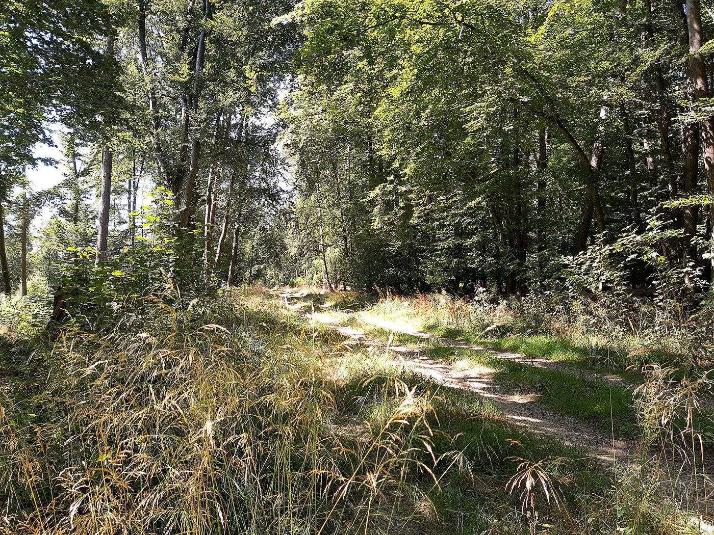
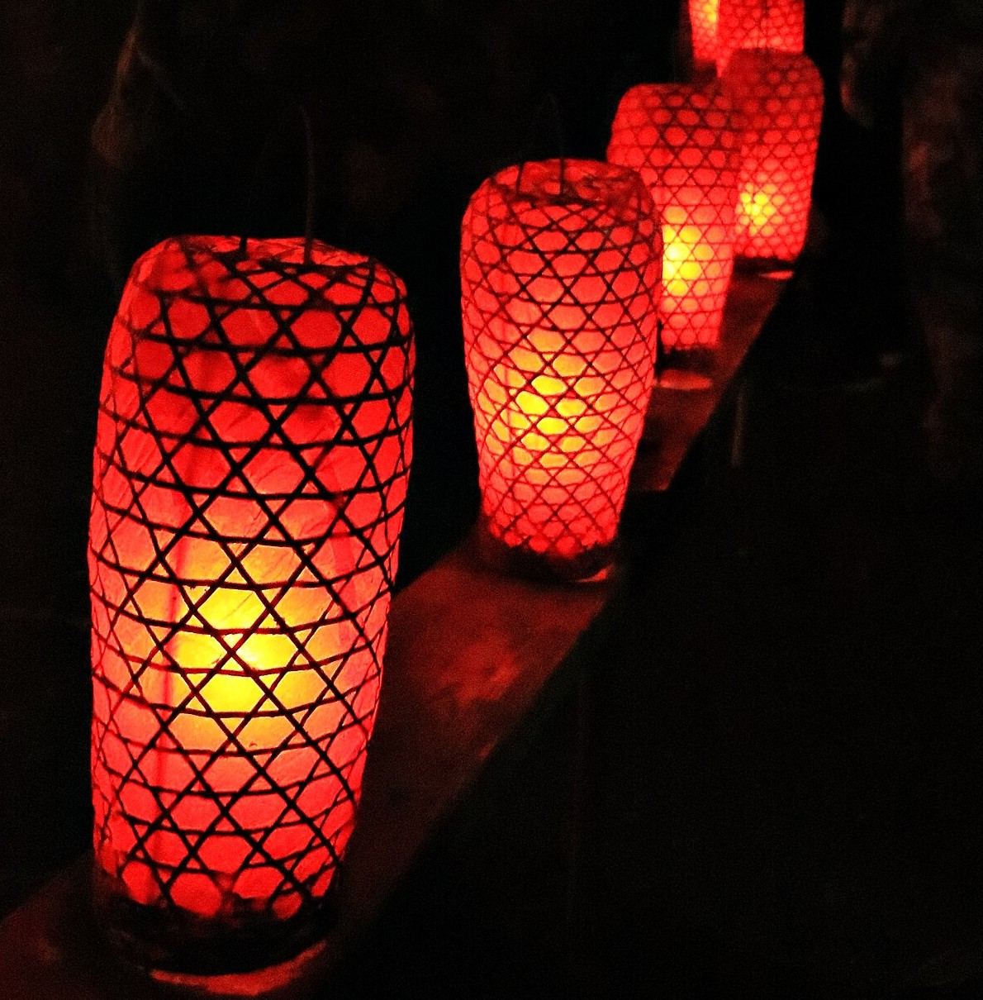

一日の過ごし方
チェックインから翌朝まで
15:00
チェックイン
門をくぐると、土間の匂いがします。靴を脱いで一段上がれば、ここから翌朝まで、宿はあなただけのもの。まずはお茶を一杯、囲炉裏のそばで。

16:00昼
里山を歩く
宿のまわりの小道を、ゆっくり歩きます。落ち葉を踏む音、田の水のきらめき、遠くで鳴く鳥の声。目的地は決めずに、気の向くほうへ。

17:30夕
夕暮れ
日が傾き、山の影が長くのびる頃。檜の湯に身を沈めると、木の香りが立ちのぼります。外の暗さが少しずつ深まるのを、湯の中で感じてください。

19:00夜
夕食
囲炉裏に火が入り、炭の匂いが広がります。川魚が焼けるのを待ちながら、交わす言葉は少なめに。温かいものを、温かいうちに。
21:00
縁側の灯り
夕食のあと、縁側に小さな灯りをひとつ。夜風が頬をなで、虫の音と、湯のみから立つ湯気が寄り添います。話しても、黙っていても、心地よい時間です。


22:00夜
何もない夜
テレビもWi-Fiもない部屋で、聞こえるのは風の音だけ。灯りを消して縁側に出れば、空には星。何もない夜が、思いのほか満ち足りています。
06:00朝
朝の散策
鳥の声で目が覚めます。羽織を一枚はおって、霧のなかへ。冷えた空気を胸いっぱいに吸い込むと、頭の奥まで静かになります。昨日とは違う山の表情に出会えます。

08:00
朝食
散歩のあとの、温かいお粥とお茶。干物の香ばしさと、漬物のほどよい塩気。体の内側から、ゆっくり目が覚めていきます。
10:00
チェックアウト「またここへ」
荷物をまとめ、もう一度縁側に座ってみる。来たときより、少し呼吸が深くなっていることに気づきます。またここへ、と思えたら、それで十分です。